История iPhone в двадцати формах
2007
iPhone
Всё начинается с касания.
Телефон, музыка и интернет встречаются на одном экране. Вместо физической клавиатуры — Multi-Touch и интерфейс, которым управляешь пальцами.
Первый iPhone работал в сети EDGE. Ни 3G, ни App Store на старте ещё не было.
История у Apple ↗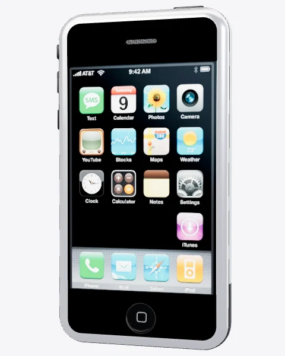
3,5″ · алюминий и пластик
2009
iPhone 3GS
Знакомая форма. Новая скорость.
Глянцевый округлый корпус продолжает дизайн iPhone 3G. Внутри — более быстрые компоненты, камера с автофокусом и возможность записывать видео.
Буква S в названии означала Speed — скорость.
История у Apple ↗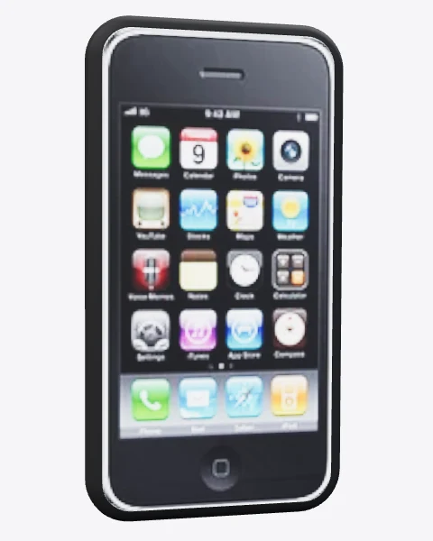
3,5″ · глянцевый пластик
2010
iPhone 4
Стекло. Сталь. Чёткие грани.
Две стеклянные панели соединяет стальная рамка. Retina-дисплей делает текст заметно чётче, а фронтальная камера открывает эпоху FaceTime.
Стальная рамка вокруг корпуса одновременно служила частью антенной системы.
История у Apple ↗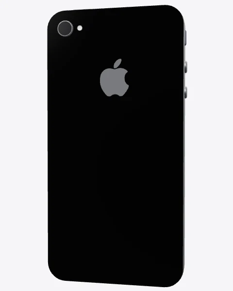
3,5″ Retina · стекло и сталь
2012
iPhone 5
Экран тянется вверх.
iPhone становится выше, но остаётся удобным для одной руки. Алюминиевая спинка и скошенные грани сменяют стеклянную конструкцию предыдущего поколения.
Lightning заменяет широкий 30-контактный разъём. Новый штекер можно вставить любой стороной.
История у Apple ↗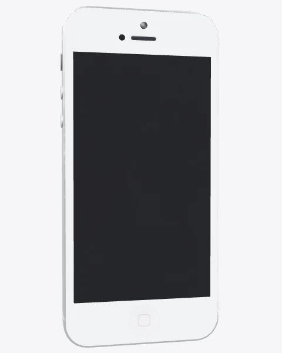
4″ Retina · алюминий
2013
iPhone 5c
Цвет выходит на первый план.
Плавный поликарбонатный корпус скрывает стальной каркас. Пять ярких цветов превращают знакомый iPhone в более личный предмет.
Цветные корпуса появились одновременно с новым плоским интерфейсом iOS 7.
История у Apple ↗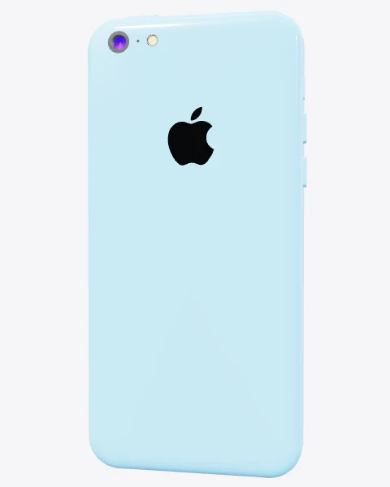
4″ · пять цветов
2013
iPhone 5s
Прикосновение становится ключом.
В привычной кнопке Home появляется Touch ID. Тонкое металлическое кольцо обозначает новое взаимодействие: приложить палец, чтобы разблокировать телефон.
A7 сделал iPhone 5s первым смартфоном с 64-битной архитектурой процессора.
История у Apple ↗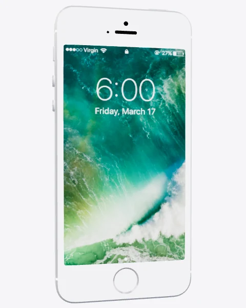
4″ · Touch ID · A7
2014
iPhone 6
Больше экрана. Мягче линии.
Острые грани уступают место округлому алюминию. Стекло плавно переходит к краям, а вместе с iPhone 6 появляется увеличенный iPhone 6 Plus.
Кнопка питания переехала с верхней грани на правую: до неё проще дотянуться.
История у Apple ↗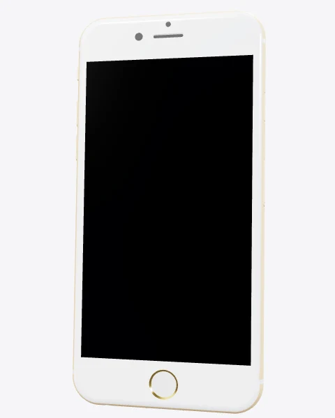
4,7″ · округлый алюминий
2016
iPhone 7
Меняются даже привычные детали.
Механическую кнопку Home заменяет чувствительная к нажатию поверхность с откликом Taptic Engine. Корпус получает защиту от воды и пыли.
Разъём 3,5 мм исчезает. Показанный здесь (PRODUCT)RED появился в 2017, после запуска модели в 2016.
История у Apple ↗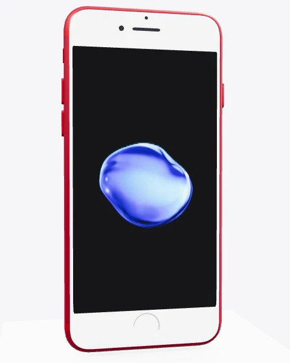
4,7″ · Taptic Engine · IP67
2017
iPhone 8
Возвращение стекла.
За знакомым силуэтом — стеклянная задняя панель. Она помогает добавить беспроводную зарядку, а дисплей True Tone подстраивает оттенок под освещение.
Для беспроводной зарядки Apple выбрала стандарт Qi.
История у Apple ↗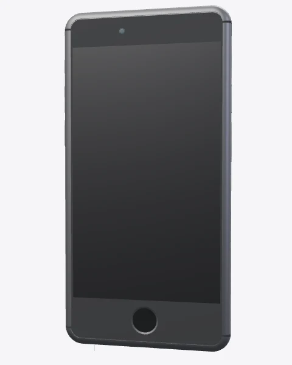
4,7″ · стеклянная спинка · Qi
2017
iPhone X
Почти всё становится экраном.
Кнопка Home исчезает. OLED-дисплей занимает почти всю переднюю панель, жесты заменяют привычное нажатие, а Face ID узнаёт владельца по лицу.
X читается как «десять»: модель представили в год десятилетия iPhone.
История у Apple ↗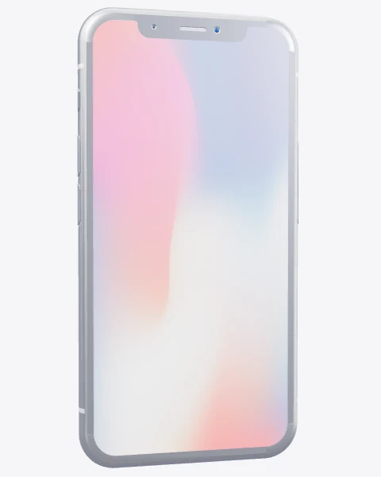
5,8″ OLED · Face ID
2019
iPhone 11 Pro
Камера становится системой.
Три объектива объединены на квадратной площадке. Сверхширокоугольная камера расширяет поле зрения, а матовая стеклянная спинка меняет ощущение от корпуса.
Это первое поколение iPhone с названием Pro.
История у Apple ↗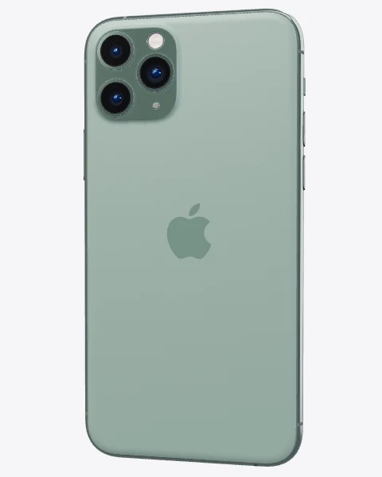
5,8″ OLED · три камеры
2020
iPhone 12 Pro
Снова прямые грани.
Плоская стальная рамка возвращает строгий силуэт. За стеклянной спинкой скрываются магниты MagSafe, которые помогают точно совмещать зарядку и аксессуары.
Рядом с камерами появляется LiDAR — датчик, измеряющий расстояние с помощью света.
История у Apple ↗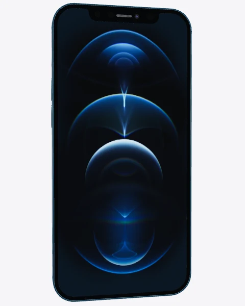
6,1″ · 5G · MagSafe
2021
iPhone 13 Pro Max
Движение становится плавнее.
Большой дисплей получает ProMotion с адаптивной частотой до 120 Гц. Камеры увеличиваются, а вырез в верхней части экрана становится меньше.
Макросъёмка позволяет фокусироваться на объектах всего в двух сантиметрах от камеры.
История у Apple ↗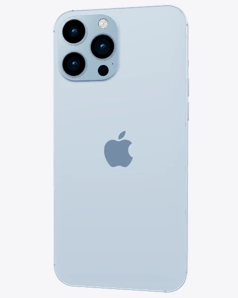
6,7″ · ProMotion · макросъёмка
2022
iPhone 14 Pro Max
Вырез учится взаимодействовать.
Dynamic Island превращает область вокруг фронтальных датчиков в часть интерфейса. Таймеры, музыка и текущие события получают собственное место над приложениями.
Always-On оставляет важную информацию видимой даже на заблокированном экране.
История у Apple ↗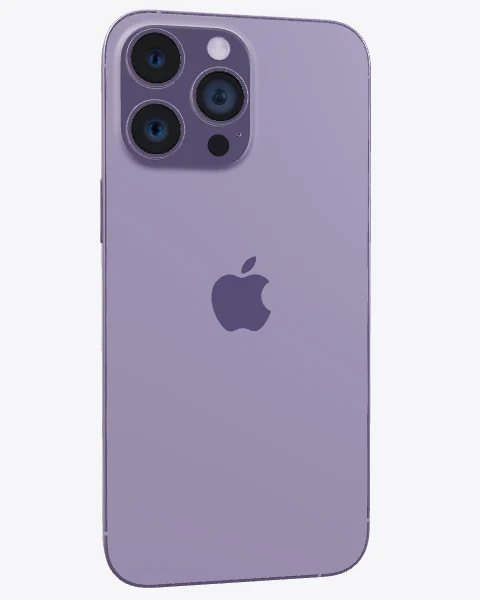
6,7″ · Dynamic Island · Always-On
2023
iPhone 15 Pro Max
Титан меняет характер корпуса.
Титановая внешняя рамка делает Pro легче. Переключатель беззвучного режима уступает место настраиваемой кнопке действия, а на нижней грани появляется USB-C.
В Pro Max впервые используется тетрапризма для пятикратного оптического приближения.
История у Apple ↗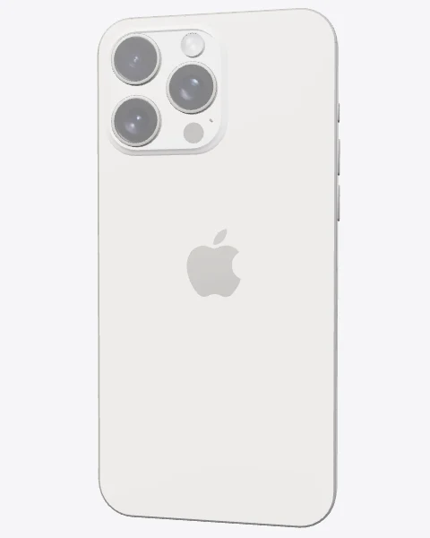
6,7″ · титан · USB-C
2024
iPhone 16 Pro Max
Ещё один способ сделать кадр.
Экран Pro Max вырастает до 6,9 дюйма. На правой грани появляется Camera Control — отдельный элемент для запуска камеры и управления съёмкой.
Camera Control распознаёт нажатие и скольжение пальца, объединяя несколько способов управления.
История у Apple ↗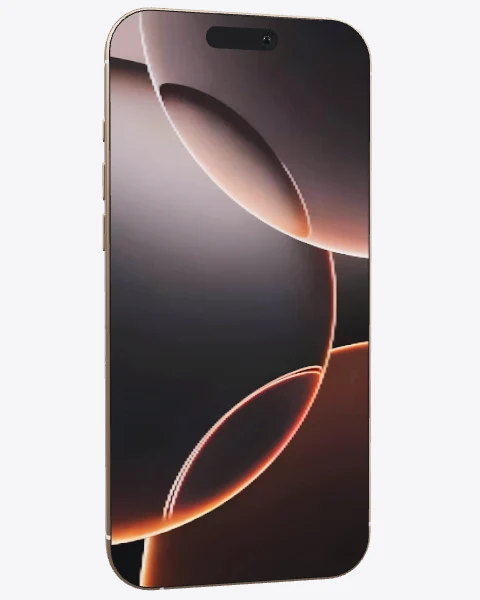
6,9″ · Camera Control
2025
iPhone 17 Pro
Новая архитектура снаружи и внутри.
Алюминиевый Unibody-корпус и широкая площадка камер меняют задний силуэт. Испарительная камера помогает отводить тепло от A19 Pro.
Три задние камеры этого поколения имеют разрешение 48 Мп.
История у Apple ↗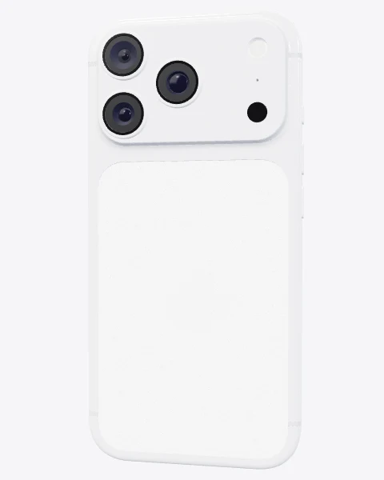
6,3″ · алюминиевый Unibody · A19 Pro
2025
iPhone Air
Тонкость становится идеей.
Титановый корпус толщиной 5,6 мм исследует другой путь развития iPhone. Компоненты собраны в верхней площадке, оставляя больше места для аккумулятора.
В тонком корпусе остаётся большой 6,5-дюймовый дисплей с ProMotion.
История у Apple ↗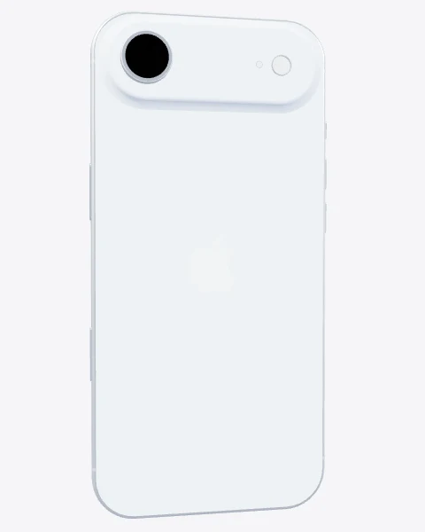
5,6 мм · титан · 6,5″
2026
iPhone 18 Pro Max
Свет получает новое управление.
Знакомый большой корпус скрывает новую систему камер. Основная камера с переменной диафрагмой даёт больше контроля над светом и глубиной резкости.
Dynamic Island становится меньше; вычисления и обработку изображения берёт на себя A20 Pro.
История у Apple ↗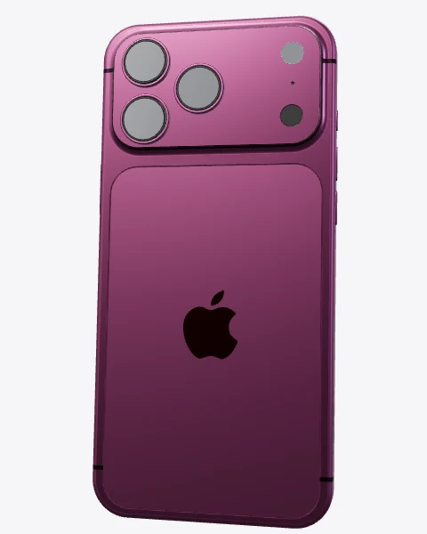
6,9″ · переменная диафрагма · A20 Pro
2026
iPhone Duo
История раскрывается дальше.
Первый складной iPhone меняет саму форму устройства. Внешний экран остаётся привычным телефоном, а раскрытый корпус превращается в большой рабочий дисплей.
Два экрана — 5,4 и 7,6 дюйма. Touch ID встроен в боковую кнопку.
История у Apple ↗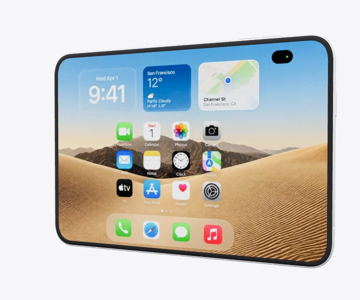
5,4″ + 7,6″ · складной титан
Подготавливаем первый iPhone…
Прокрутите, чтобы продолжить историю